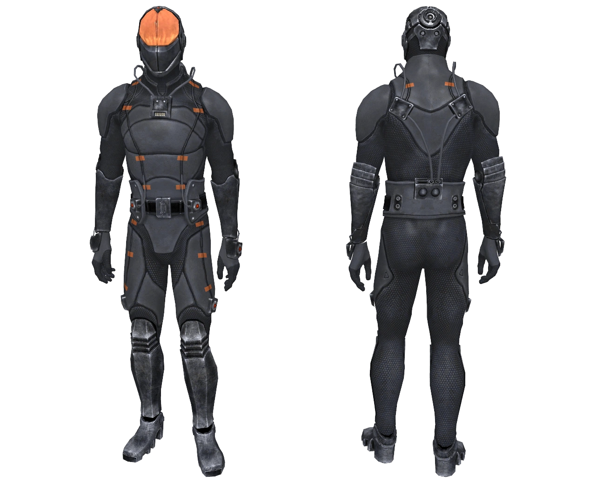
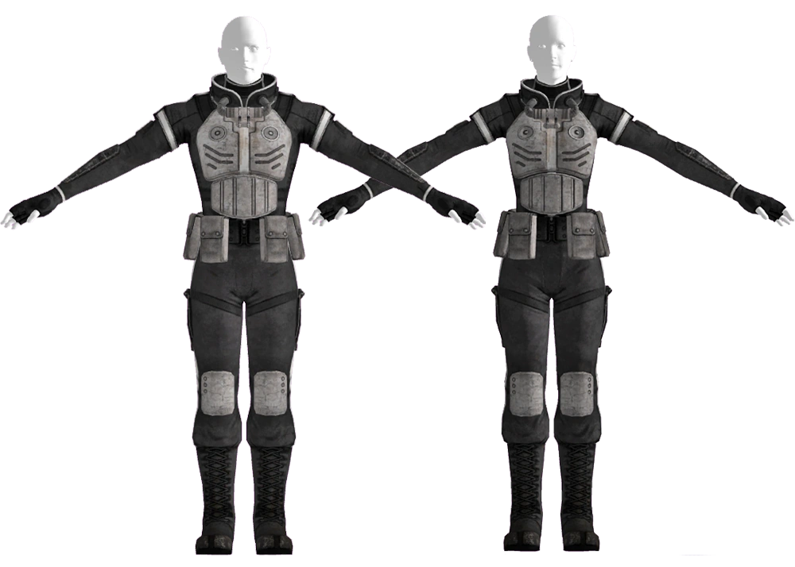

Chinese Stealth Armor
中国ステルスアーマー（黒鬼）
中国ステルスアーマー（正式名称：黒鬼（ヘイグイ）ステルスアーマー）は、大戦前の中国が発明した先進的なステルス技術を応用した装甲の一種です。
中米戦争中、人民解放軍がアメリカ軍に対して展開した秘密兵器であり、核戦争後も限られた数が各地の派閥によって使用されてきました。
背景

黒い、体にぴったりとフィットするボディスーツと不透明なフェイスプレートで構成される黒鬼ステルスアーマーは、ただ一つの目的のために設計されました──高リスクの諜報作戦における装着者のほぼ完全な不可視化です。
スーツには人が携帯可能なデバイスが内蔵されており、変調場を生成して対象物の片側の反射光をもう一方に透過させます。その結果、ほぼ完璧なアクティブカモフラージュを実現。
ボディスーツは、着用者のシルエットを単純化し、可能な限り平面を作り出すことで、カモフラージュされる領域の複雑さを低減するよう設計されています。
中米戦争中に人民解放軍の兵士に「黒鬼」の名で配備され、アメリカの力任せの戦術に諜報と欺瞞で対抗することを可能にしました。
しかし、一部のユニットが戦闘で鹵獲され、その技術がアメリカによって研究・リバースエンジニアリングされることになりました。
技術の成熟度
戦術的な成功率にもかかわらず、実はこのスーツはアメリカとの紛争開始時にはプロトタイプ段階をかろうじて脱したばかりで、技術の洗練度にはばらつきがありました。
- 初期世代：フーバー・ダム破壊工作（ネバダ州）で捕まった中国の潜入工作員は、クローキング能力を持たない初期型を使用していました
- 最新世代：アンカレッジの戦いでアラスカに展開した精鋭クリムゾン・ドラグーン部隊は、長時間の透明化が可能な最先端モデルを装備していました
アメリカによる逆用
鹵獲した黒鬼ユニットから、光を曲げる基本原理がリバースエンジニアリングされ、アメリカのステルス技術が2つの方向に発展しました：
- ロバート・メイフラワー（RobCo）── スーツの特性を研究し、ポータブルだが不安定なステルスボーイ3001を開発
- Big MTの研究者 ── 中国製スーツを分解し、ゼロからステルススーツを再設計。アサシンスーツ（Mark I）とステルススーツMk IIの2つのプロトタイプを完成
モデル
クリムゾン・ドラグーン装甲
アメリカとの戦争に備え、中国はステルスアーマーを再設計した上でエリート部隊クリムゾン・ドラグーンに支給し、アラスカに展開させました。
精鋭部隊はアメリカ軍に大混乱を引き起こしましたが、少なくとも1着は無傷で鹵獲され、研究・リバースエンジニアリングのため複数の企業に送られました。
そのうちの1着は、ワシントンD.C.のコンスタンティン・チェイス将軍が所有するバーチャル・ストラテジック・ソリューションズの施設に保管され、2277年にLone Wandererがアンカレッジ奪還シミュレーションを完了してVaultが開封されるまでそこに残されていました。
もう1着は、アパラチアへの潜入任務中にエージェント・モチョウが保有し続け、彼女がグールになった後も所持していました。
初期世代ステルスアーマー
着用者の周囲にステルスフィールドを展開する能力を持たない、黒鬼アーマーの初期型です。
ネバダ州のフーバー・ダムを破壊しようとした2人の潜入工作員に支給されましたが、彼らは捕まって処刑され、スーツはダム内の倉庫に保管されました。
2270年代にニュー・カリフォルニア共和国の兵士に発見されましたが、放射性廃棄物のある保管室に紛れ込んでいました。
備考
- Fallout: New Vegasのユニークなグレネードマシンガン「Mercy」のシャーシには「Hei Gui Bye Bye」と書かれていますが、その意味は不明です
舞台裏
「ヘイグイ」のピンイン表記と発音は、初出作品であるVan Burenのデザインドキュメントでは明確に規定されていませんでした。
意図された意味はジョシュア・ソーヤーがフォーラムの投稿で説明し、連邦の非米活動取締隊（UAF）の装甲からのステップアップであると述べています。
「黒鬼」は中国語で「黒い幽霊」を意味します。
ギャラリー


中国軍ステルスアーマーは、Fallout 76の装備の中でもトップクラスの汎用性を誇る定番アイテム。
放射線耐性1000でハズマットスーツと同等の放護、しゃがめばステルスボーイ効果、さらに落下ダメージ90%軽減——一着でこれだけ盛り込まれているのは破格。
ニュークリアサイロに潜入する時も、ブラストゾーンの探索でも、これ一着でカバーできるのが頼もしい。
入植者ルートで「見えない絆」をクリアすると設計図がもらえるので、Wastelandersの序盤でぜひ手に入れておきたい装備ですね。
This article was created by translating and editing Chinese stealth armor from Nukapedia: The Fallout Wiki.
Licensed under the Creative Commons Attribution-Share Alike License (CC BY-SA 3.0).
コミュニティ維持のため、寄付を受け付けております。
> COMMENTS